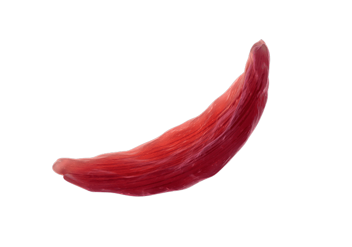

Gene editing is a molecular process that involves making precise changes to the DNA of an organism.
GENE EDITTING PROCESS
1. Design
Design a guide RNA (gRNA) that matches the mutated sequence in the HBB gene, which is responsible for sickle cell disease.
2. Delivery of CRISPR-Cas9
Combine the designed gRNA with the Cas9 enzyme and introduce it into the patient's hematopoietic stem cells. These cells give rise to blood cells, including red blood cells.
3. Gene Editting
The CRISPR-Cas9 system guides Cas9 to the targeted mutation in the HBB gene, causing a cut at that specific location.
4. DNA Repair
The cell's natural repair mechanisms, such as non-homologous end joining or homology-directed repair, come into play.
5. Cell Transplantation
In some cases, edited cells are cultured and expanded outside the body. The edited hematopoietic stem cells are then reintroduced into the patient through a transplantation process.
MORE SOURCES!
